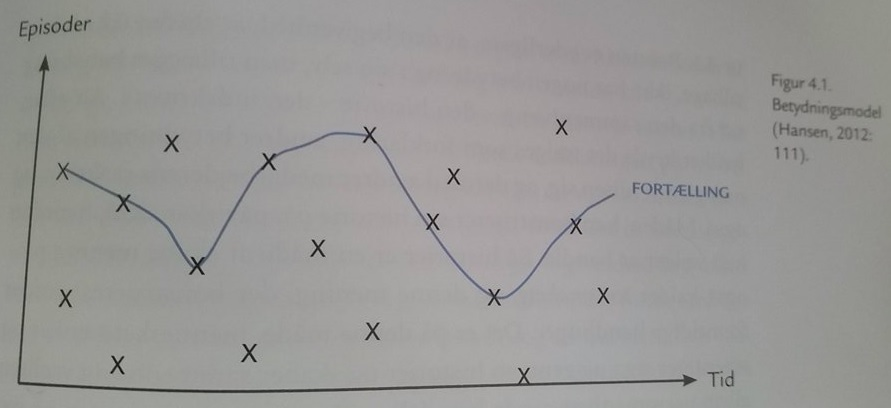
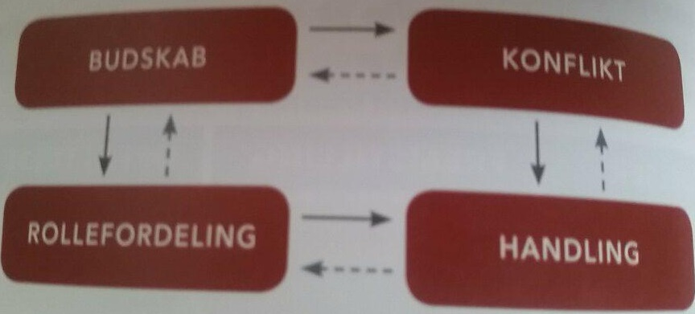
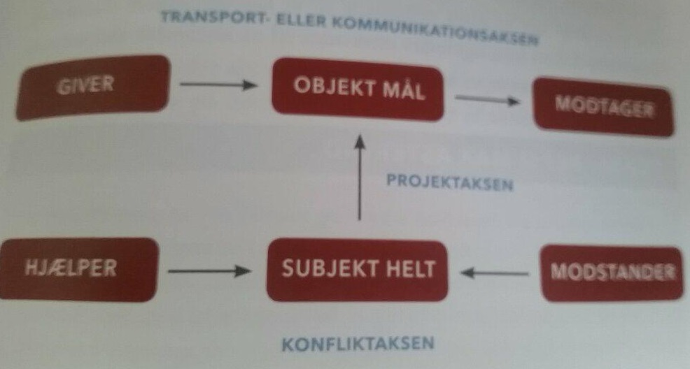

Storytelling er en kommunikationsdisciplin, som benytter historier som et strategisk kommunikationsværktøj.
Historiefortælling er menneskets ældste måde at kommunikere på med storytelling. Der er fundet historiefortælling så langt tilbage, at vi boede i huler og kommunikerede historier ud med hulemalerier.
En fordel ved storytelling er, at det taler til hjertet frem for hjernen. Kommunikationen bliver mere vedkommende, fordi modtager kan eventuelt identificere sig med historien. Der appelleres gennem patos frem for logos eller etos.
Storytelling skaber billeder i hovedet på modtageren. Det er et journalistisk trick, der siger "Don't tell it - show it", og det handler om, at journalisten skal skrive sin tekst, så læseren kan se det for sig og måske opleve at blive en del af fortællingen.
Når man arbejder med storytelling, lægger man vægt på at formidle essensen snarere end en kronologisk præcis gengivelse.
Teorien back storytelling er inspireret af den narrative teori. Den narrative teori stammer oprindelig fra litteraturens verden, men har derfra bevæget sig over i terapiens verden og herfra ind i organisationsteorien.
Grundtanken i den narrative teori er kort sagt, at mennesket tænker i historier og derfor skaber mening i sin hverdag og i sit liv ved at gøre hændelser og begivenheder til en del af en større historie.
Handler om at skabe mening ved at konstruere en historie. Det gøres ved brug af forudgående hændelser, som kan give forklaring på nutidige begivenheder.
Krydserne i modellen til højre, er alle de ting, der er foregået. Det kan være alt fra noget der er blevet sagt, til noget der er blevet gjort eller noget der er sket.
udfra alle disse hændelser, brainstormer vi igennem dem og finder en rødtråd i mellem dem. F.eks. Hvis vi har fået en reaktion vi ikke kan forklare. Brainstormer vi igennem forudgående hændelser, for at finde en mulig forklaring på hvad der skete. Man går i gang med retrospektivt at etablere forbindelser mellem mere eller mindre tilfældige begivenheder, der er gået forud.
Betydningsmodellen
 Kilde: Christiansen, Hans-Christian & Rose, Gitte B. 2017. "Online Kommunikation - En Introduktion"
Udfra denne formel alene, vil det være svært at arbejde med storytelling.
Man kan derfor lade sig inspirere af historiefortællingens fire elementer:
Historiefortællingens fire elementer illustrerer fire aspekter, som man altid bør være opmærksom på og overveje, når man arbejder med storytelling.
 Kilde: Christiansen, Hans-Christian & Rose, Gitte B. 2017. "Online Kommunikation - En Introduktion"
Ifølge Jacobsen (2011) bør et budskab kunne rummes i en enkelt sætning.
Man bør arbejde med sit budskab, indtil man kan formulere det som en kort og klar påstand.
Når man har defineret sit budskab, kan man arbejde videre med udformningen af sin storytelling.
Her kan en konflikt defineres, en rollefordeling samt beslutte sig for et handlingsforløb.
Konflikt
En konflikt er somregl historiens omdrejningspunkt og hænger derfor tæt sammen med det plot, som fortællingen konstrueres omkring.
En konflikt anspores ved, at der opstår en ubalance, som skal løses, og som det fremgår af berettermodellen, kan denne konflikt optrappes gradvis efterhånden, som historien skrider fremad.
Konfliktens funktion er ud over at skabe handling i historien at få budskabet til at fremstå klart og tydeligt. Gennem den måde, konflikten præsenteres og løses på, bringes en række værdier i spil, som formidler afsenderens synspunkt.
Rollefordeling
For at konflikten kan udspille sig, har historien brug for en række aktanter. Aktantmodellen er den mest kendte indenfor dette.
 Kilde: Christiansen, Hans-Christian & Rose, Gitte B. 2017. "Online Kommunikation - En Introduktion"I rollefordeling er der blevet identificeret 6 aktanter, som det ses i figuren ovenover.
Handling
Den sidste del af historiefortællingens fire elementer, er den konkrete handling.
Her skal man finde ud af hvad der skal tages stilling til, hvordan historien skal foregå, hvordan konflikten skal præsenteres, hvordan den løses og hvad belønningen er. Her er berettermodellen ofte benyttet.
Dette fortællertema er karakteriseret ved heltens "nervepirrende flugt fra døden", som munder ud i, at helten bliver belønnet samtidig med, at han har befriet samfundet fra truslen.
Denne arketype er centreret omkring den ydmyge og oversete helt eller heltinde, som til sidst kommer ud af sin skygge.
Målet er kendetegnet ved, at det er uvurderligt kostbart eller betydningsfuldt, og intet offer er for stort at bringe for at nå dertil.
Først virker verdenen underholdende og forfriskende med dens sære væsener og vidundere om end også ganske forvirrende. Senere vokser en truende skygge frem, som ødelægger glæden ved den magiske verden. Helten ønsker at vende hjem, men bliver fanget. Lykkes dog helten til sidst at komme hjem.
Omdrejningspunktet er som regel en spirende romance mellem et eller flere par. Komediens handling starter ofte, før parret er blevet introduceret for hinanden. Typisk en modsætninger-mødes, hvor de starter ud med ikke at kunne holde hinanden ud.
Humøret påvirkes negativt. Hovedpersonen bliver frustreret. Dette kan i begyndelsen lede hovedpersonen til at begå flere forbrydelser, idet han forsøger at sikre sin position.
Drømmen bliver til et mareridt, som kulminerer i hovedpersonens voldsomme destruktion.
På grund af forbandelsen tvinges helten til at leve sit liv i skjult eller hæmmet af forbandelsen. Står ofte på i flere år.
I nogle tilfælde opdager helten eller heltinden selv et smuthul, som kan løse dem fra forbandelsen.
Er begreber fra retorikken. De er træ fprskellige appelformer. Appellerer enten til modtagerens følelser, intellekt eller trækker på afsenderens troværdighed.